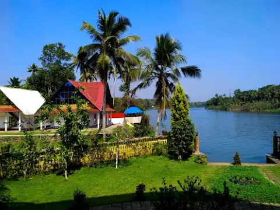
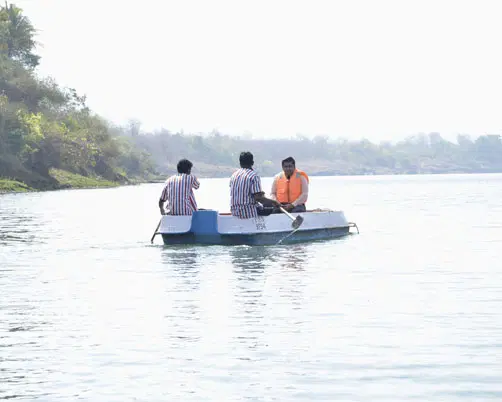
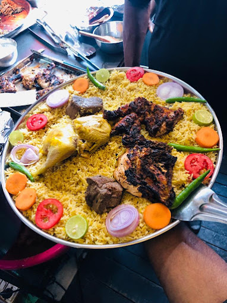
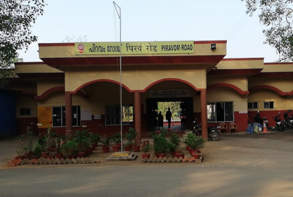

Asia > India > Kerala > Kottaytam > Velloor
Velloor (also known as Mevelloor) is a village in the Vaikom Taluk of the Kottayam district in Kerala, India.
village lies on the banks of the Muvattupuzha River and is about 12 kilometres (7.5 mi) from Vaikom. Piravom Valiyapally (10 km), Vaikom Mahadeva Temple (14 km), and Kanjiramattom Mosque (10 km) are important shrines in the region. Keevelloor Sree Vamanaswamy temple is the famous temple located at this village. This is one among very few temples which is dedicated to loard Vamana an incarnation of Lord vishnu. The temple is huge and is currently under the management of travancore dewaswam board as per the order of the Hon. High court of Kerala as a result of litigation between managers . Hindustan Newsprint Limited is a major landmark here. Piravam Road railway station is the nearest railhead.
Kerala Paper Products Limited is a Government of Kerala Company located at Velloor, Kottayam (Dist)
Silent River Resort & Spa is located at Vadakara, on the banks of picturesque Muvattupuzha River.
Just by the side of Muvattupuzha River, this place is a fantastic place for those who like kayaking, swimming, boating, fishing etc.
Best burgers, pastas and pizzas in town Open till 4am. Louis Lane, 3869a, Pandit Karuppan Rd, Perumanoor, Kochi, Kerala 682020
Piravom Road railway station (code: PVRD) is a railway station in Kottayam district, Kerala
